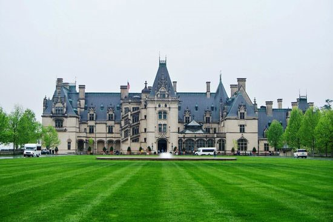
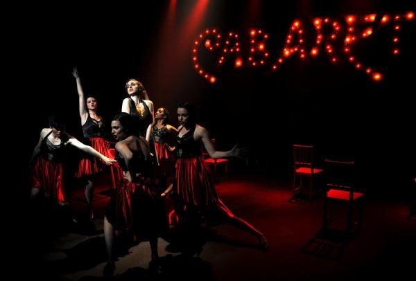
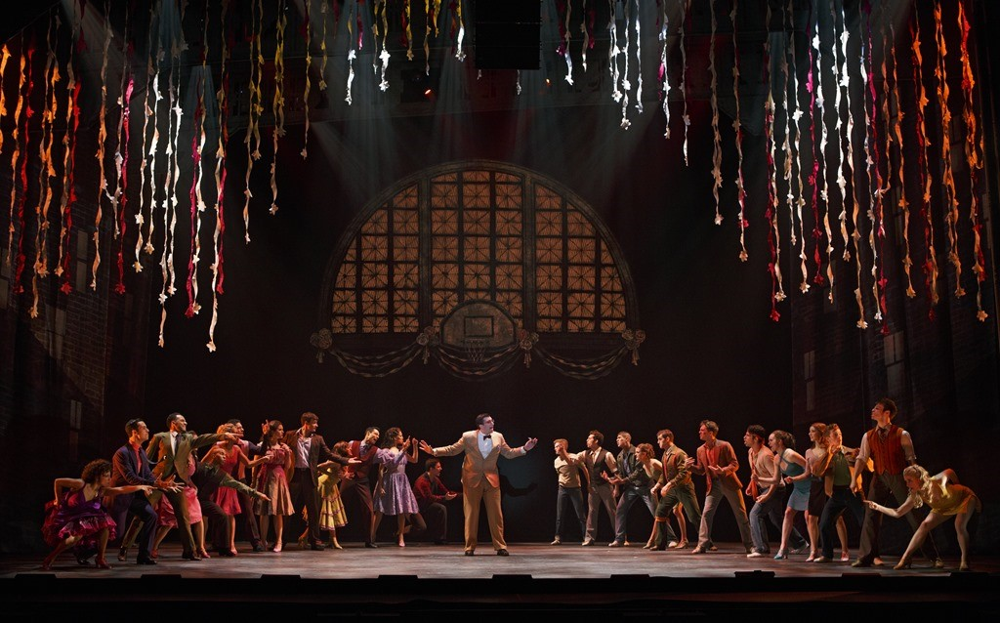
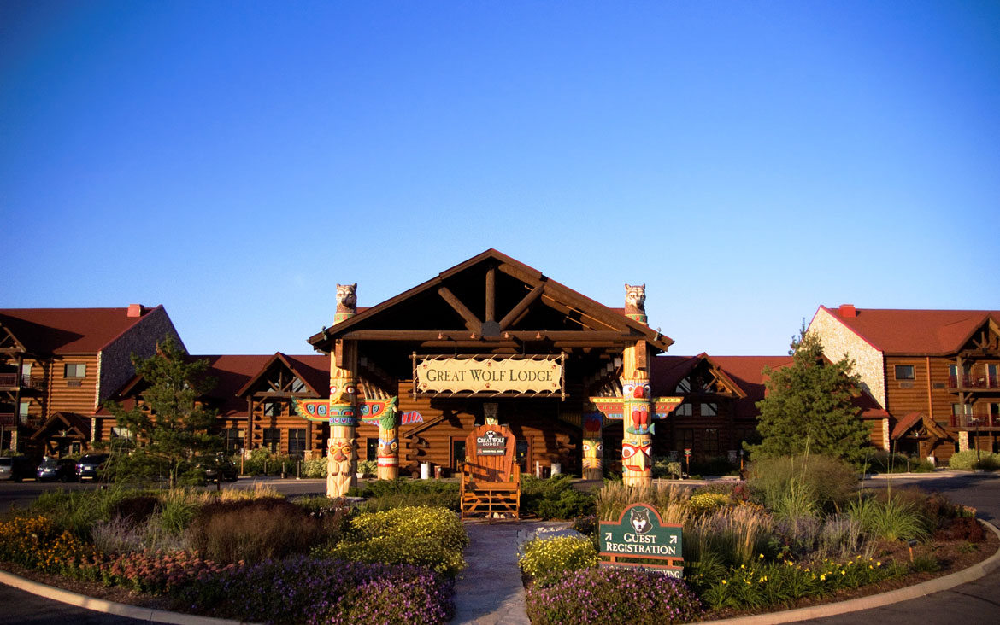
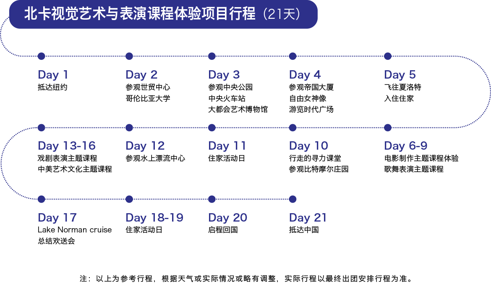

视觉艺术与表演课程体验项目

北卡视觉艺术与表演课程体验项目，将在美国老师的指导下，了解电影制作流程，学习电影制作技术，亲身体验如何制作一部微电影。进入美国戏剧表演课堂，体验各种角色。亲身体验影视梦，感受影视制作的每一个环节。从前期准备，拍摄到后期制作，从电影制作工具的使用（例如 sound booth, green screen） 到剧本、道具、表演等各环节的编排和设计，找到自己的同伴一同完成imovie 的制作和呈现，让孩子的每一个艺术细胞都得到尽情的释放。在课程结束时，自编自导一场真实的演出，感受戏剧魅力，成为舞台上的主角，体验“戏剧人生”。
时间：2018.07.11 ~ 2018.07.31
项目简介
• 漫步纽约，走进北卡，体验行走中的寻力课堂。
• 走进美国戏剧表演课堂，诠释角色，体验“戏剧人生”。
 • 与同伴制作微电影并完美呈现，发挥团队协作能力，让艺术细胞尽情释放。

• 结业后收获“文化交流小使者”证书，提升个人多元化背景。


项目特色和厚力支撑


行程安排

魅力北卡
北卡罗来纳州是许多著名私立大学的所在地，比如杜克大学，维克森林大学等。夏洛特属亚热带季风性湿润气候，四季分明，气候温和湿润，年平均气温 12℃。市内树木葱郁，绿草如茵，享有“ 绿色城市 ”美称。艾尔德尔-斯泰茨维尔学区（ 简称I-SS ）位于北卡罗来纳州艾尔德尔郡，拥有超过20,000 名学生，是北卡罗来纳州最大的学区之一。知名“ 蓝带高中”诺曼湖中学坐落于此。作为北卡乃至全美的示范性学区，I-SS获得了马尔科姆·波多里奇国家质量奖。
想和更多有趣的朋友同行， 现在就加入我们的旅途吧！